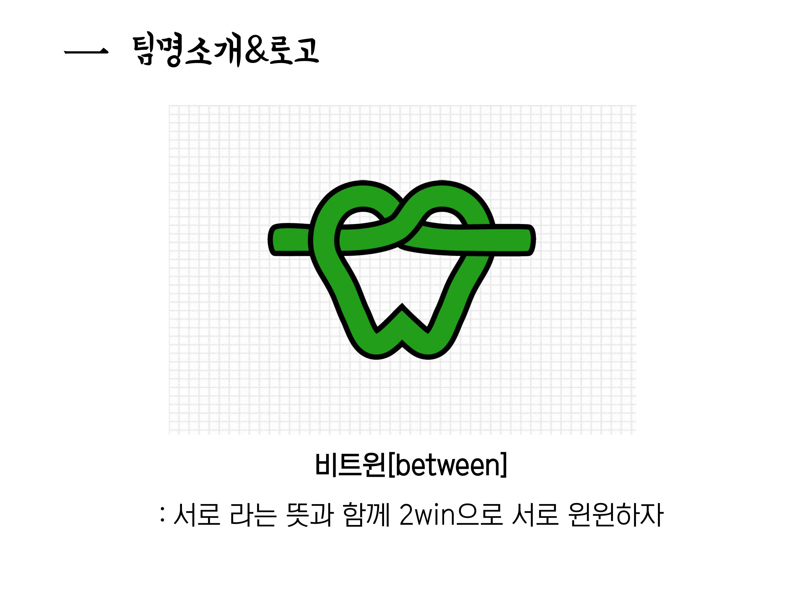
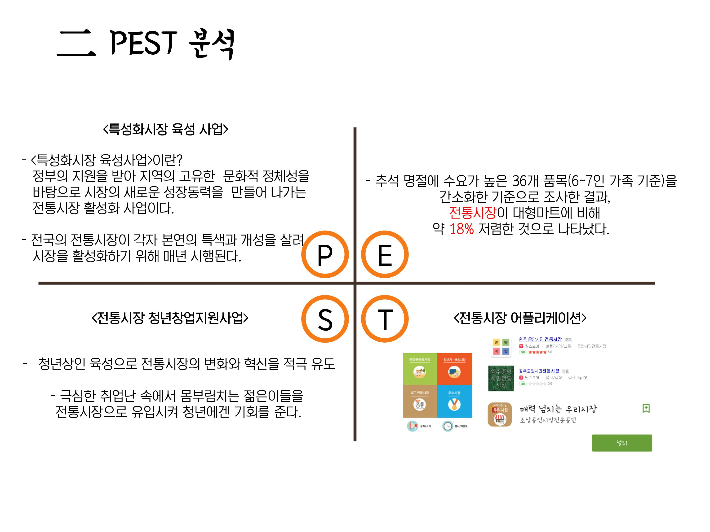
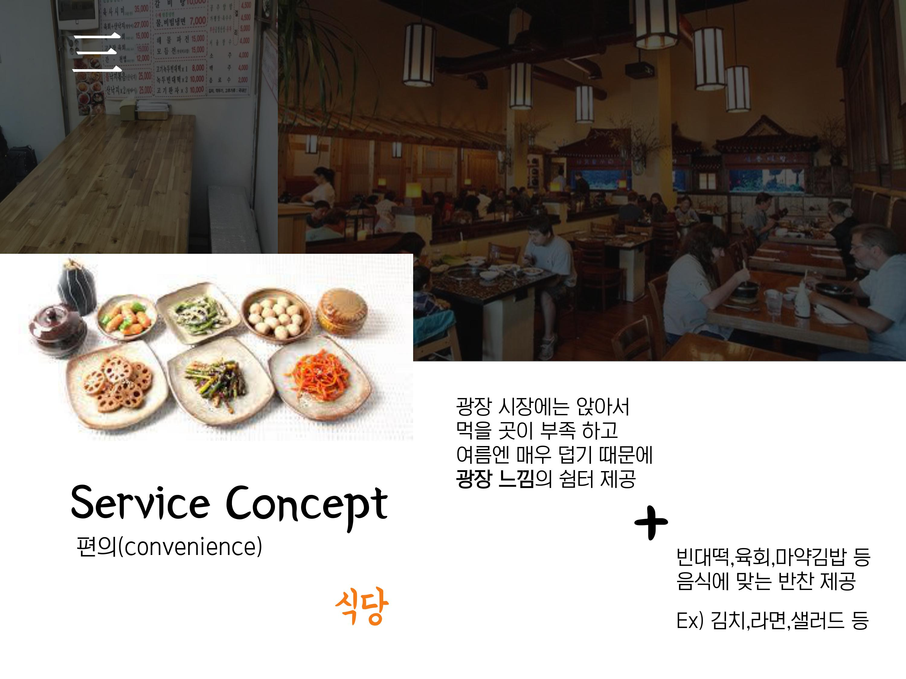

전체적으로 대한민국의 전통시장이 침체되어가는 요즘, 광장시장을 새로운 시각으로 관찰하고 전통시장을 효과적으로 살릴 수 있는 방법을 고안한 프로젝트이다.
다수의 필드리서치와 인터뷰를 통해 전통시장의 문제점을 파악하고 새로운 나이대가 전통시장에 유입될 수 있도록
전체적인 연령대를 고려한 솔루션을 앱과 연동시켜 광장시장 앱을 제작하였다.
Digital Game Services
Concept Development
Creative Direction
UX / Design
Development
팀
팀으로 해당 프로젝트를 진행하였다.
팀의 이름은 '비트윈'이며 팀 로고도 제작하여 활동하였다.

PEST 분석
광장시장을 PEST 분석을 통해 문제점을 해결하고자 하였다

해결책
필드리서치와 새롭게 변화를 준 전통시장을 분석하며 광장시장만의 솔루션을 찾았다.

광장시장 앱
광장시장의 솔루션을 광장시장 앱에 담았다.
해당 앱에는 지도, 큐알코드 인식, 광장시장 소개 등의 기능을 넣었다.